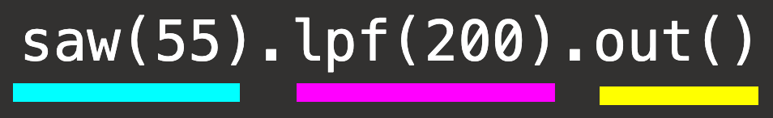

1. graph based

- you've seen patch based interfaces Pure Data, Max, cables.gl, noisecraft.. or modular synths
- modules + cables = graph
- each module has inputs and one or more outputs
Saw 55 -> Filter 0.5 -> AudioOut
graph based language for live coding on the web and beyond
a project started on june 7, 2024 -> almost 1 year in the making
paper by felix roos and raphael forment
Saw 55 -> Filter 0.5 -> AudioOut





a simple chain:
without method chaining:
we can reuse nodes using variables:
tree walking:
multichannel expansion:
multichannel expansion:
channel matching:
feedback:
feedback with lambdas:
multichannel expansion + feedback:
show Node data structure